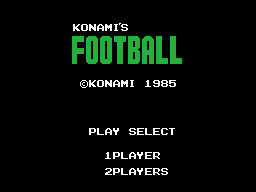
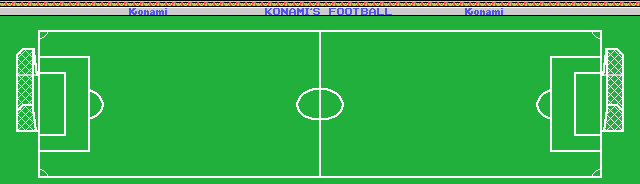

El mismo cartucho salió también como Konami's Football. Mismo año, mismo tamaño y el mismo número de catálogo, RC-732. La pregunta es qué cambia, y la respuesta se puede dar con un número: una instrucción de 9.755.
Konami's Soccer b9536809a1784afb2e49a43d80ba9c6c8c15cd31ecbd6c284e9bf62c6927dcd4
Konami's Football 1fee5ce4d4d5f48a92849eb7bed7ebb653f7e773fd4467824c27f54204b0fe7f
Comparados byte a byte, los dos cartuchos se diferencian en 28.586 bytes de 32.768, o sea el 87,2 %. Ese número no dice nada: la segunda compilación está corrida. El logotipo de Football ocupa menos que el de Soccer, todo lo que va detrás se desplaza, y a partir de ahí cada call apunta a otro sitio aunque llame exactamente a lo mismo.
Alineando las dos ROM, el desplazamiento sólo cambia cuatro veces en 32 KB:
| desde | hasta | desplazamiento |
|---|---|---|
0x4000 | 0x4D1C | 0 |
0x4E1D | 0x6DBC | −46 |
0x6DDE | 0x73C9 | −44 |
0x73CA | 0x8599 | −40 |
0x85A9 | 0xBFF3 | −38 |
O sea: Football arranca 46 bytes más corto y recupera 2, 4 y 2 en tres puntos. Y 0xBFF3 vuelve a coincidir porque la marca de Konami va pegada al final.
Con ese mapa se pueden comparar las dos compilaciones como hay que compararlas: desensamblando las dos y traduciendo las direcciones de una al espacio de la otra, de modo que un call 04ef7h de Football y un call 04f25h de Soccer se vean iguales, que es lo que son. Lo hace tools/coteja_builds.py:
python3 tools/coteja_builds.py soccer.rom football.rom \
work/soccer.trace.json 0x4000
9755 instrucciones cotejadas, 1 distintas (0.01 %)
0x4cdb A: ld c,005h B(0x4cdb): ld c,004hEsa es toda la diferencia de código entre los dos cartuchos. Y está en la pantalla de título: 0x4CDB carga en C el número de filas del rótulo grande, que 0x4CDD recorre estampando catorce patrones consecutivos por fila. Soccer pinta cinco filas de tiles y Football cuatro.
De los 125 bloques de datos declarados, 97 son idénticos byte a byte. De los 28 restantes, veinticuatro son tablas de punteros —las de subescenas, las de parches, las de sonidos— que cambian sólo porque las direcciones a las que apuntan se han movido. Quedan cuatro cambios de verdad, y los cuatro son el mismo cambio:
| bloque | qué es | qué cambia |
|---|---|---|
patrones_4d1c | el logotipo grande del título | 262 de 280 bytes: es otro dibujo |
patrones_6d8d | los tiles del campo | Football escribe 104 bytes de VRAM en vez de 96: un tile más |
color_739b | el color de esos tiles | 7 de 120 bytes |
mapa_del_campo | las 1.840 casillas del campo | 7 casillas, todas en la fila 1, columnas 41 a 48 |
Esas siete casillas son la valla publicitaria que cruza el campo por arriba.

Compárese con el de Soccer: es el mismo campo, línea por línea, y lo único que cambia es lo que pone la valla.
0x4000 a 0x4025 es idéntica byte a byte: mismo "AB", mismo INIT en 0x4070 y la misma cabecera del Konami Game Master en 0x4010 con su 0x07 y su 0x32.0xBFF3 son los mismos, BA 85 B5 8A 00 98 00 9F 94 89 0A 32 AA. El título en katakana que el cartucho lleva escondido dentro sigue diciendo サッカー, Soccer, aunque la etiqueta diga Football.El campo de Football de arriba está montado ejecutando en Python los pasos del propio cartucho, y cotejado contra un volcado de VRAM de openMSX igual que el de Soccer:
COLOR 0 PATRONES 0 SPR PATR 0
MAPA de 0xE600, 80x23: 2 de 1840 (los dos porteros)
VENTANA de 23x32: 44 de 736 (42 son parches de jugador)Las mismas cifras, exactamente, que las de Soccer.